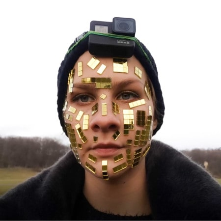

2020
The project presents a vision of an intelligent substance that multiplies itself, taking control
of a post-apocalyptic reality. The biomass spreads in dead reservoirs, the blue depths of water
that man has wrought out of life. It often adopts anthropomorphic shapes, rendering human forms
ironically. It is intelligent, inter-species matter, the essence of which emerges from the
Earth’s core like gel lava.
The objects that go with the video projection create a peculiar ecosystem which, thanks to its
sensitive tissue, is constantly changing under the influence of oxygen and light. The plants
burning above the dead tank drift into the space while the smoke distributes the information
gathered inside their physical layers. A human can find refuge in a hut which, illuminated by a
screen, reminds us of safety and allows us to palpate and explore the virtual layer of the
exhibition. One can look at how the intelligent matter finds its place in the physical world.
Here, water is a metaphor for an empty archive which, although beautiful, has been deprived of a
chance to unite fauna and flora. On the screen, we see seductive images of the blue water
surface, recorded from a bird’s-eye view. They resemble exotic islands that can be seen without
multiplying the carbon footprint of air travel to remote places. These azure reservoirs were
built on the site of the former Gosławice lignite pit. This place was intended for the storage
of waste from nearby power plants in the late 1970s. The ash and slag began to precipitate
chemicals, so the water became highly alkaline. As a result, there is the absence of any
organisms inhabiting the lake and a strict ban on swimming in its waters as it may burn the
skin. This environment remains sterile due to human industrial activity. Despite this, the
paradisal landscape is a frequent destination for Sunday trips of the Wielkopolska residents.
Watching the water from a bird’s-eye view and getting caught up in the hypnotic sequence of
turquoise images produces a certain unease. These alarmingly calm waters reveal a lifeless,
uninhabited bed. Therefore, digital forms were installed in their depths, which were the result
of scanning gelatinous fragments of the human body, additionally encrusted with forest fauna
(branches, tree limbs). “Water retains our more anthropomorphic secrets, even when we would
rather forget. Our distant and more immediate pasts are returned to us in both trickles and
floods.” (Astrida Neimanis, Hydrofeminism: Or, On Becoming a Body of Water, [in:] Undutiful
Daughters: Mobilizing Future Concepts, Bodies and Subjectivities in Feminist Thought and
Practice, eds. Henriette Gunkel, Chrysanthi Nigianni and Fanny Söderbäck, Palgrave Macmillan,
New York 2012).
In the universe of this project, the elementary particles that define the form of material
reality are, therefore, considered both as integral elements of the biological code and as
digital molecules recycled by technologically advanced meta-perception instruments: lenses,
matrices, and algorithms that extend the human cognitive mechanisms. The echoes of the shattered
images return in the form of a newly merging tissue, distributed in the physical and virtual
space, defining the sum of the experience of a world that may have already gone past its end.
Presumably, in all the overrepresentation that exists today, the line between reality and its
end has simply become unnoticeable, and what may be a reaffirmation of our existence is merely
going outside – towards natural light.

A Polish new media and interdisciplinary artist based in Poznań; graduate of the Faculty of
Photography at the University of Arts in Poznań. Member of the Scientific Society of
Photography. In her works she uses a wide range of mediums, including plant gelatin casts,
holographic installations with the use of 3D, art books, AR video. The topics she touches
revolve around the Anthropocene era and its new materiality, extraterrestrial vision of the
world and an idea of coming back to the roots. In her work, she integrates mystical perception
of reality with scientific fantasy and technology.
Artist’s Instagram profile
Artist’s Vimeo


Ludwig van Beethoven was a German composer and pianist. Beethoven remains one of the most admired composers in the history of Western music; his works rank amongst the most performed of the classical music repertoire. His works span the transition from the classical period to the romantic era in classical music.
Wolfgang Amadeus Mozart, baptised as Johannes Chrysostomus Wolfgangus Theophilus Mozart, was a prolific and influential composer of the Classical period. Born in Salzburg, in the Holy Roman Empire, Mozart showed prodigious ability from his earliest childhood.
Johann Sebastian Bach was a German composer and musician of the Baroque period. He is known for instrumental compositions such as the Brandenburg Concertos and the Goldberg Variations, and for vocal music such as the St Matthew Passion and the Mass in B minor.
Frédéric François Chopin, born Fryderyk Franciszek Chopin, was a Polish composer and virtuoso pianist of the Romantic era who wrote primarily for solo piano.